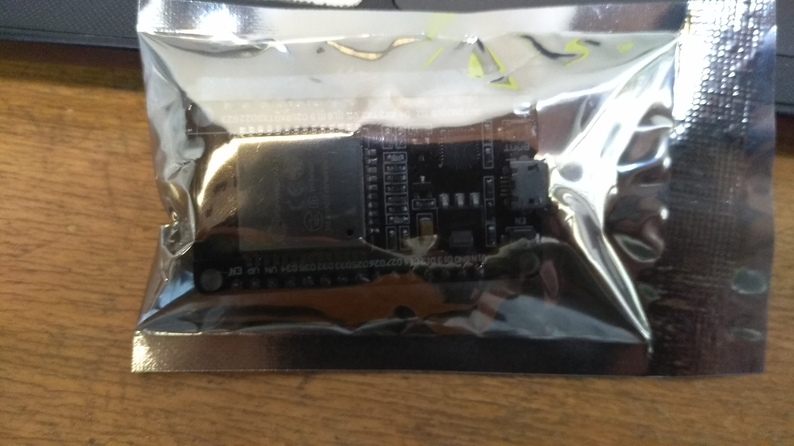
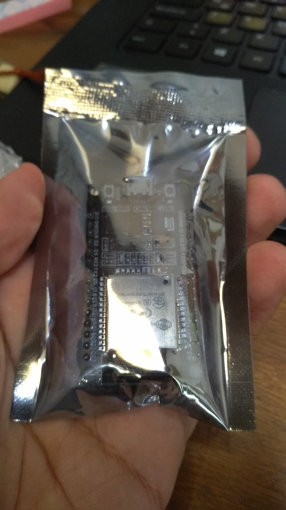
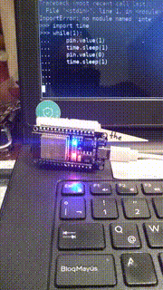

Motivation Link to heading
One of my hobbies during my school days was electronics after learning about B.E.A.M robots during a Popular Mechanics for Kids episode. You can learn more about B.E.A.M. here
During my University years I had the opportunity to refine my knowledge on basic electronics, and exploit my programming skills programming Arduino and Microchip microcontrollers (a.k.a MCUs). Those where days filled with fun, but I still wanted to be able to send data to remote locations, which could be possible by means of a RaspberryPI, or a GSM module or Bluetooth module –which were expensive– or having the Arduino/MCU connected to a regular computer with internet, so the whole point of small devices was not really possible at that time in terms of a good efficiency/cost relation.
After several years without doing electronics, I’ve heard about the ESP8266 chip and its predecessor the ESP32. The most appealing feature of those chips was the built-in support for Wi-Fi or Bluetooth technologies, all shipped in convenient development boards which can be programmed either with C, Python, or Lua.
I got lured by the possibilities of having remote controlled electronics and bought an ESP32 development board. As I progress in learning how to use it, I’ll blog about my experiences getting this new toy up and running, the pitfalls I ran into and how I manage to solve them.
As I publish blog entries, they will be linked in the table of contents near the end of this blog post.
But what exactly is an ESP32? Link to heading
The ESP32 is a low-cost, low-power system on a chip (SoC) series with Wi-Fi and dual-mode Bluetooth capabilities, powered by a single or dual core Tensilica Xtensa LX6 microprocessor with a clock rate of up to 240 MHz. Yes, a tiny chip with the clock rate of an old Intel Pentium II CPU, shipped with Wi-Fi and Bluetooth. The availability of two ADC channels and more than 15 General purpose Input Output pins (GPIO), makes this chip really powerful to IoT applications.
Here’s how my ESP32 –based on the doit ESP32 Devkit v1– came,


A sneak peak of what is comming,

Table of Contents Link to heading
The following blogs are related to ESP32
Resources Link to heading
Some useful resources are available at,
- http://esp32.net/
- Luca Dentella’s blog series on ESP32
- The amazing book Kolban’s book on ESP32